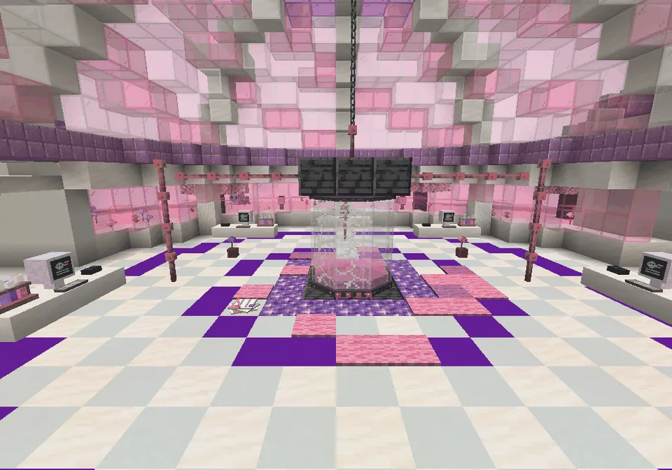
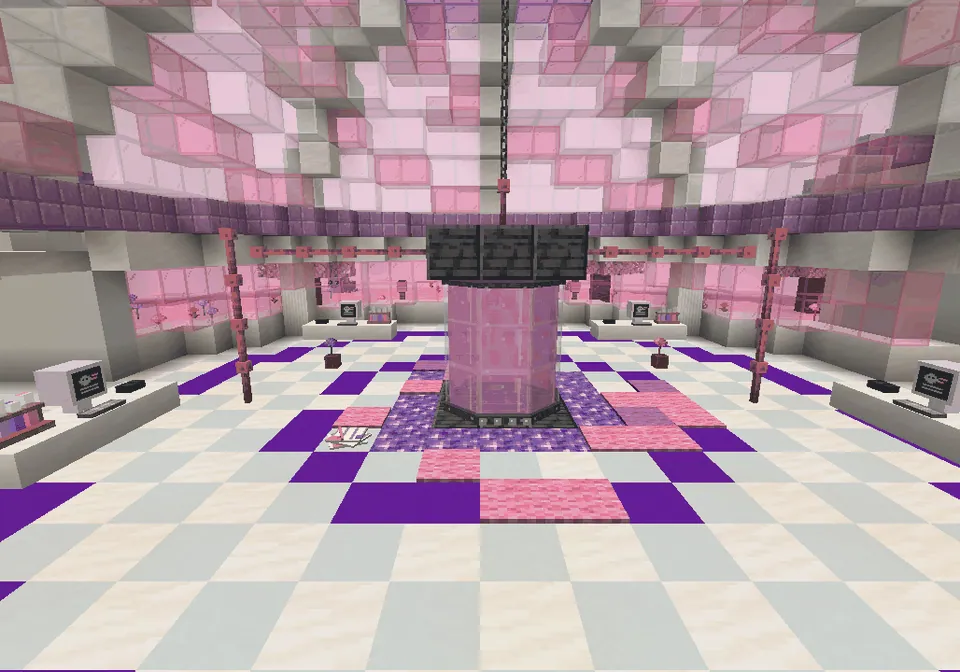
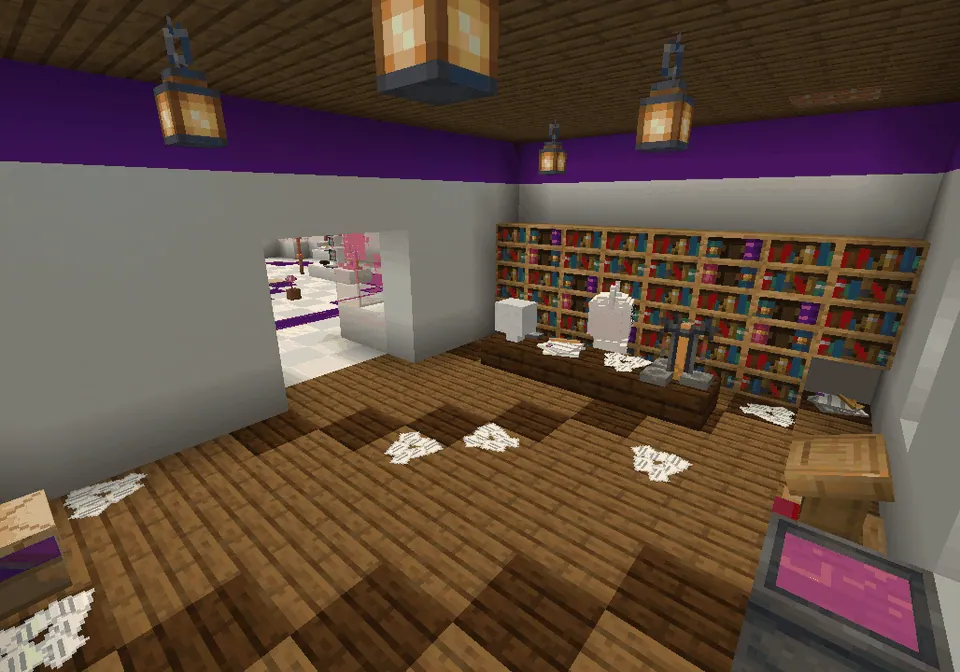
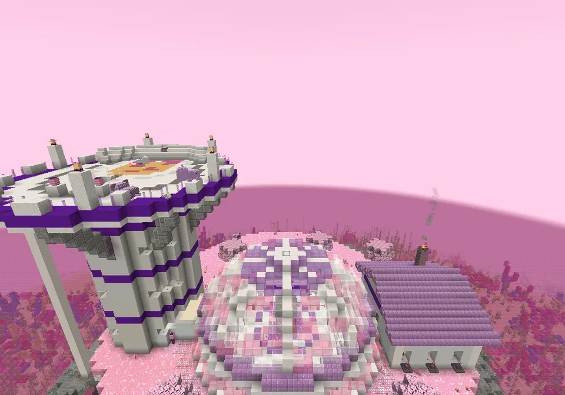

Professor Knabbelkloon wanted to clone a guh that could eat twice as many kaasknabbels. It became the Guhtwo guh.
Professor Knabbelkloon wilde een guh klonen die dubbel zoveel kaasknabbels kon eten. Het werd de Guhtwo.
Het kloon-eiland: Guhtwo, Mieuwguh and SjokkelHet kloon-eiland: Guhtwo, Mieuwguh en Sjokkel

The cracked tankDe gebarsten tank

Repaired!Gerepareerd!
The tank bubbles again. Blub, blub!De tank borrelt weer. Blub, blub!

The kantoortjeHet kantoortje
Papers everywhere. Very important. Probably.Overal papieren. Heel belangrijk. Waarschijnlijk.

Mieuwguh round the islandMieuwguh rond het eiland
Steps (FTB quests)Stappen (FTB-quests)
The quest texts are in Dutch, like everything in the game.De questteksten zijn Nederlands, net als alles in het spel.
- Het kloon-eiland
Ergens in de Diepe Guhzee staat een rotseiland met een glazen koepel en een arena bovenop. Vind het kloon-eiland (superkompas: Verhalen) en klim het steigertje op.Ergens in de Diepe Guhzee staat een rotseiland met een glazen koepel en een arena bovenop. Vind het kloon-eiland (superkompas: Verhalen) en klim het steigertje op. - Professor Knabbelkloon
In het rommelige kantoortje naast de koepelhal zit Professor Knabbelkloon, met zijn brilletje scheef. Zeg hallo en beloof dat je zijn labnotities zoekt.In het rommelige kantoortje naast de koepelhal zit Professor Knabbelkloon, met zijn brilletje scheef. Zeg hallo en beloof dat je zijn labnotities zoekt. - Zes labnotities
Zoek de zes labnotities: in het kantoortje, in de koepelhal, bij de kloontank, boven aan de torentrap en in het boothuisje. Lees ze (rechtsklik) en breng ze naar de professor. Je krijgt het trainerpetje!Zoek de zes labnotities: in het kantoortje, in de koepelhal, bij de kloontank, boven aan de torentrap en in het boothuisje. Lees ze (rechtsklik) en breng ze naar de professor. Je krijgt het trainerpetje! - Blub, blub, gerepareerd!
Vind de vier tankonderdelen in de onderdelenkisten (boothuisje, kantoortje, toren, tribune) en bouw ze in bij de gebarsten kloontank in de koepelhal (rechtsklik op de tank).Vind de vier tankonderdelen in de onderdelenkisten (boothuisje, kantoortje, toren, tribune) en bouw ze in bij de gebarsten kloontank in de koepelhal (rechtsklik op de tank). - Hihihi!
Als de tank weer borrelt, komt er iemand kijken: Mieuwguh, een klein roze zwevend guhtje. Zet haar in je Guhdex! Na het verhaal zweeft ze altijd rond het kloon-eiland.Als de tank weer borrelt, komt er iemand kijken: Mieuwguh, een klein roze zwevend guhtje. Zet haar in je Guhdex! Na het verhaal zweeft ze altijd rond het kloon-eiland. - Een dubbele portie
Breng 32 kaasknabbels en 2 snacks naar de grote knabbelschaal in de arena (rechtsklik op de schaal). Guhtwo en Mieuwguh smullen samen: x2! Je krijgt het Guhtwo-staartje en het Mieuwguh-ballonnetje.Breng 32 kaasknabbels en 2 snacks naar de grote knabbelschaal in de arena (rechtsklik op de schaal). Guhtwo en Mieuwguh smullen samen: x2! Je krijgt het Guhtwo-staartje en het Mieuwguh-ballonnetje. - x2, njeg!
Klik daarna de Guhtwo in de arena aan en neem hem mee (één per speler). Hij zweeft, zweeft met jou op zijn rug over kleine gaatjes, trekt kaasknabbels binnen 8 blokken naar zich toe en eet alles dubbel.Klik daarna de Guhtwo in de arena aan en neem hem mee (één per speler). Hij zweeft, zweeft met jou op zijn rug over kleine gaatjes, trekt kaasknabbels binnen 8 blokken naar zich toe en eet alles dubbel. - Knabbel-telekinese
Gooi een kaasknabbel een paar blokken van je Guhtwo vandaan en kijk hoe hij hem naar zich toe laat zweven. (Met de knop Telekinese in zijn guhmenu zet je het aan en uit.)Gooi een kaasknabbel een paar blokken van je Guhtwo vandaan en kijk hoe hij hem naar zich toe laat zweven. (Met de knop Telekinese in zijn guhmenu zet je het aan en uit.) - Dubbel lekker
Geef je Guhtwo een snack: hij smult x2 en krijgt dubbele hartjes. VAHOEG!Geef je Guhtwo een snack: hij smult x2 en krijgt dubbele hartjes. VAHOEG! - Het trainerpetje
Van de professor, voor de zes labnotities. Met ons eigen logo: de knabbelbal met guhoortjes!Van de professor, voor de zes labnotities. Met ons eigen logo: de knabbelbal met guhoortjes! - Het trainerpakje
Van de professor, als de kloontank weer borrelt: een lila vestje en een rugzakje met een knabbelbal.Van de professor, als de kloontank weer borrelt: een lila vestje en een rugzakje met een knabbelbal. - Het Guhtwo-staartje
Van de Guhtwo, na de grote knabbelmaaltijd: een paars staartje met een bolletje en een nekbuisje.Van de Guhtwo, na de grote knabbelmaaltijd: een paars staartje met een bolletje en een nekbuisje. - Het Mieuwguh-ballonnetje
Van Mieuwguh, na de grote knabbelmaaltijd: een roze ballonnetje dat op haar lijkt.Van Mieuwguh, na de grote knabbelmaaltijd: een roze ballonnetje dat op haar lijkt.